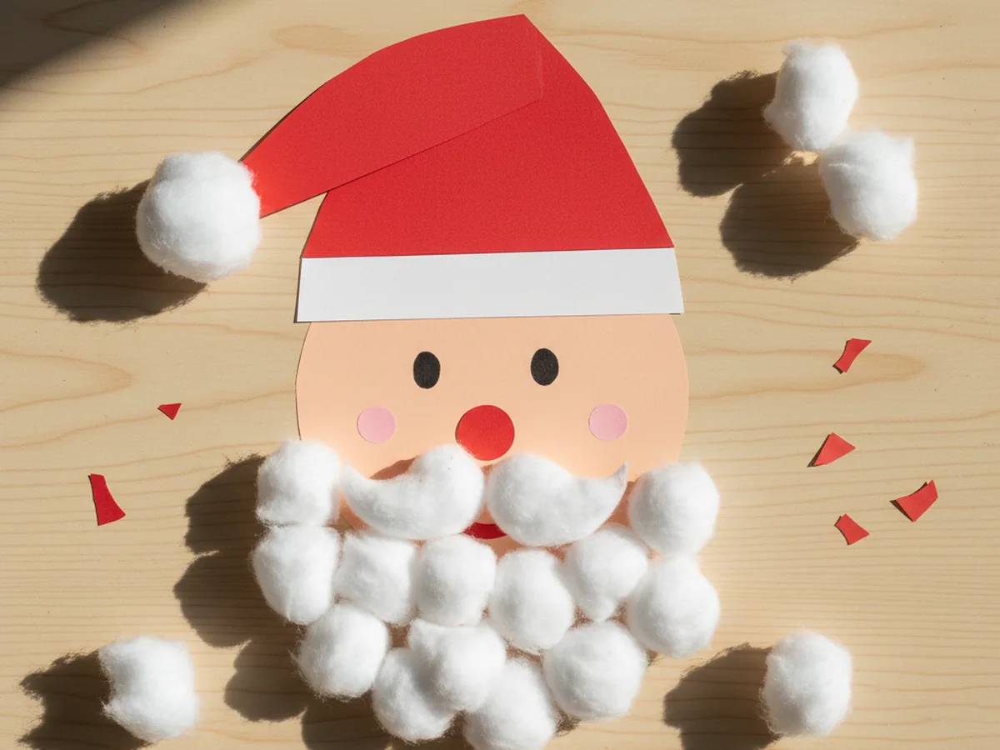
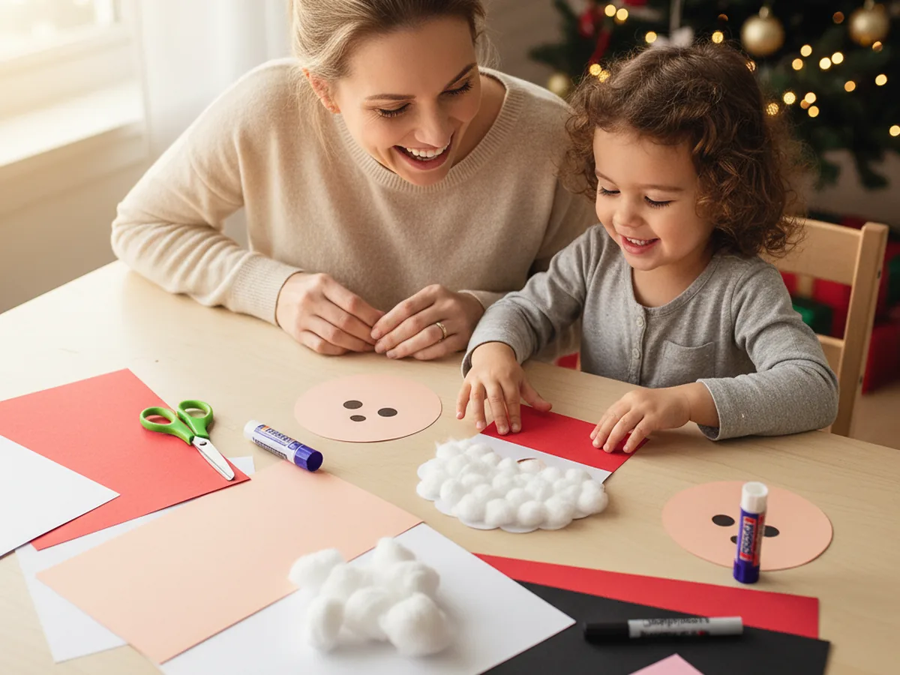
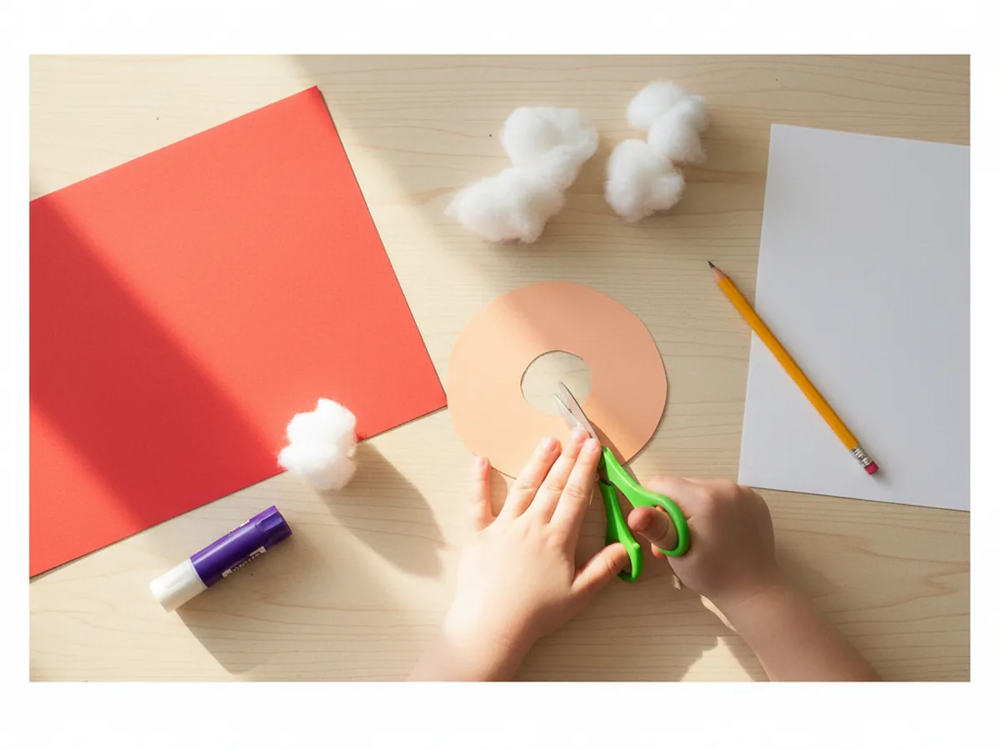
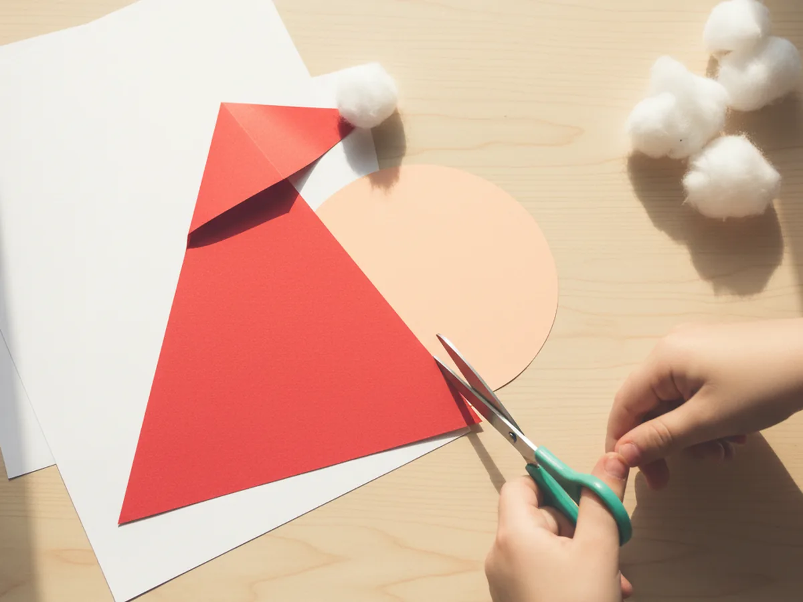
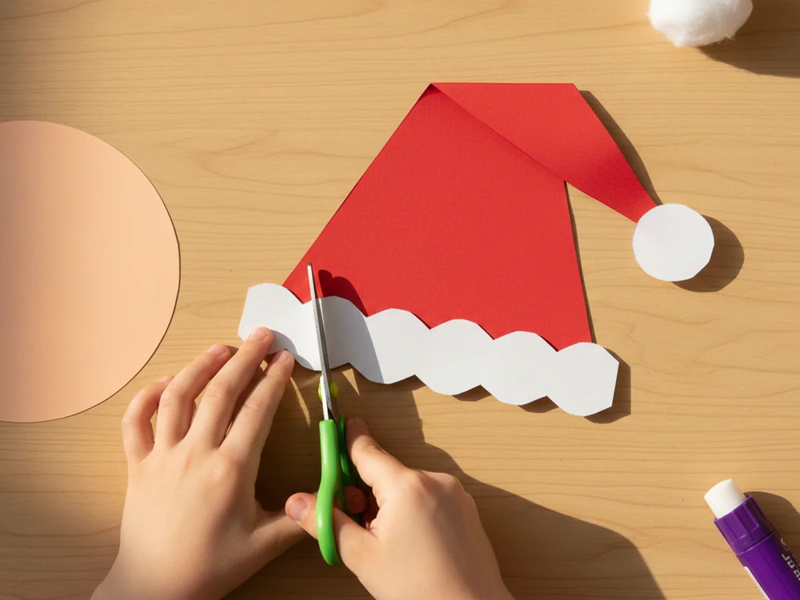
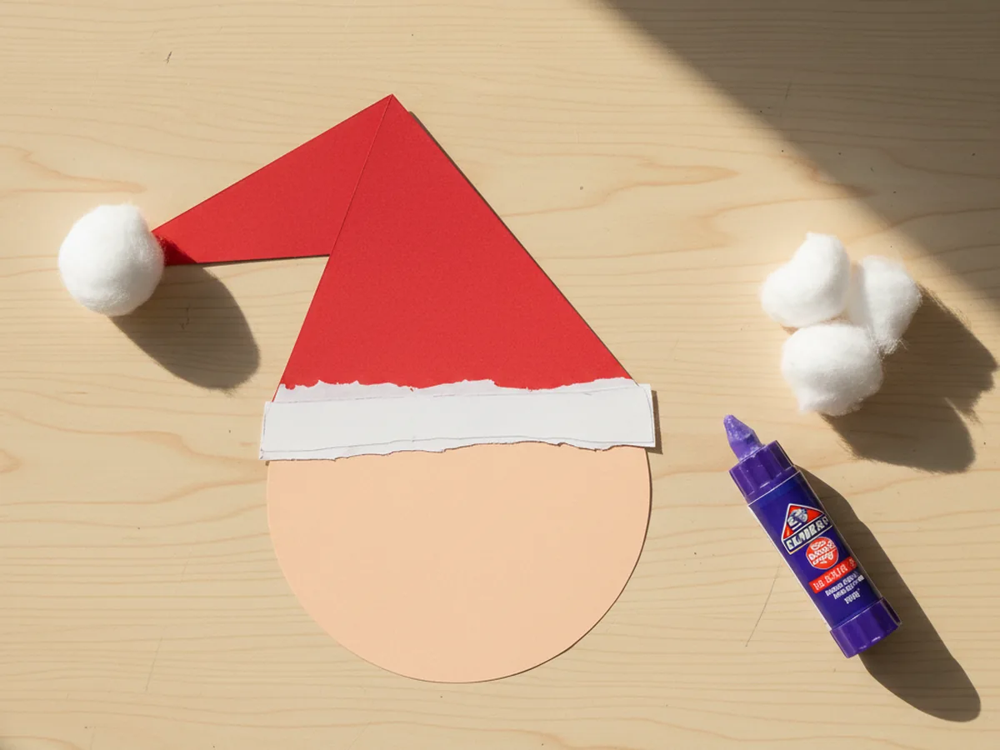
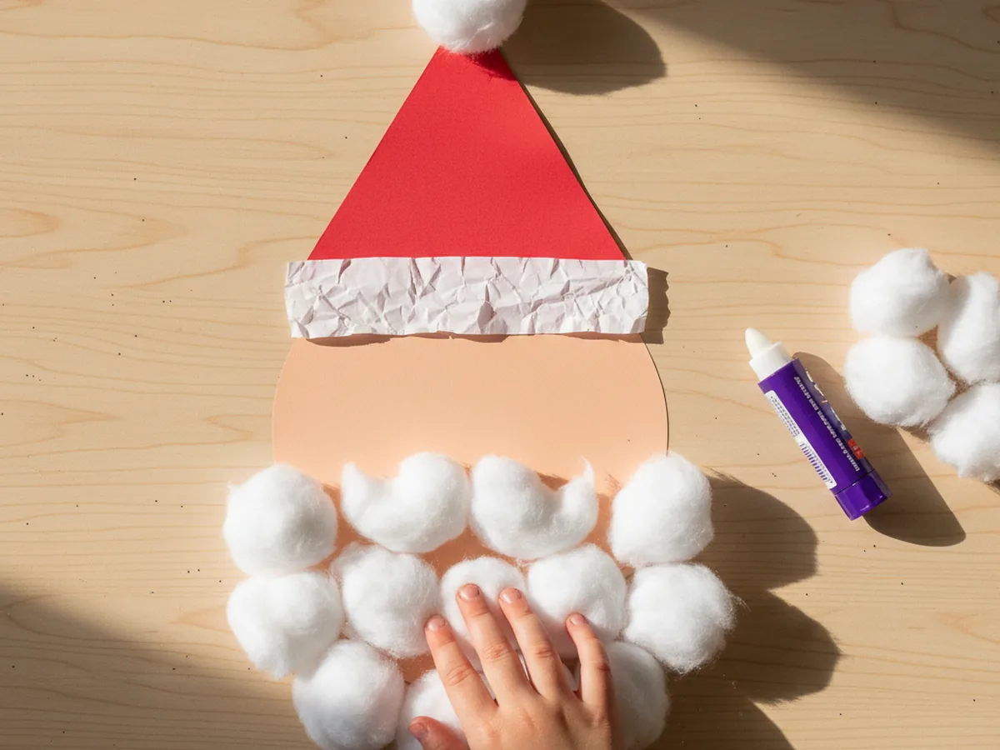
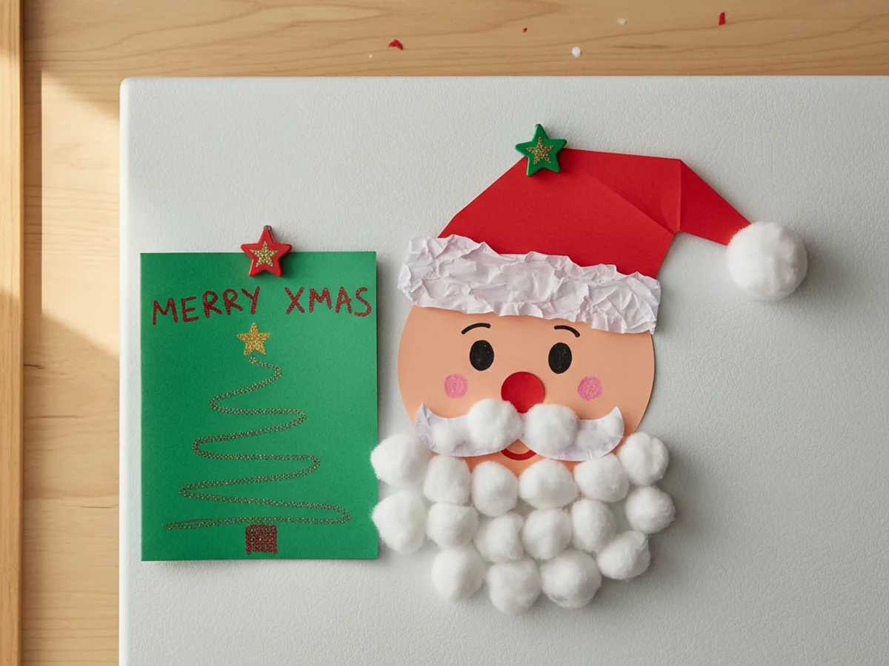

If your house lights up for the holidays the second the calendar flips to December, this santa claus paper craft is going to feel like a tiny burst of Christmas magic at your kitchen table. It comes together from a few sheets of construction paper, a handful of cotton balls, and supplies you probably already have, and the finished Santa looks cute enough to hang on the fridge, tape to the window, or pop into your child's Christmas card. The whole project takes about thirty minutes, which makes it a perfect quiet activity for a snowy afternoon. 🎅
Even a four year old can do most of this craft with just a little help, and older kids will have a great time fluffing the beard and drawing Santa's friendly little face. Every handmade Santa Claus craft turns out a little different, and that is exactly what makes it so charming. Grab your supplies, warm up some hot chocolate, and let me walk you through it.
Why Kids Love This Craft
Santa Claus has a kind of soft, sparkly magic for little ones that almost nothing else can match. He shows up everywhere in their world during the holidays, from picture books to bedtime stories to the cookies left out on Christmas Eve. When a child gets to make their own easy Santa Claus paper craft, they feel like they are creating a tiny piece of that magic with their very own hands. A lot of kids end up giving their Santa a little voice and carrying him around the house for the rest of the day.
The project also gives small hands gentle practice with several useful skills. Cutting the round face, snipping the triangle hat, pressing on the fluffy cotton beard, and drawing the eyes and nose all build fine motor control, focus, and confidence. The steps are simple enough that no one gets frustrated, and the result looks impressive enough that your child will feel genuinely proud of what they made.
Best of all, this cute Santa Claus craft has no single right way to look. Some Santas come out cheerful, some come out sleepy, some have one wonky eye that makes everyone giggle, and every single one is precious. The open-ended feel lets the personality of your little crafter shine through. ✨

What You'll Need
Here is everything you need to make this santa claus paper craft at home. Lay the supplies out on the table before you sit down with your child so the activity flows smoothly and nobody has to get up mid-project to dig for the glue stick.
- Crayola Construction Paper (240 Sheets, 12 Colors), includes the red, white, peach, pink, and black shades you need for Santa.
- Sky Organics Jumbo Cotton Balls (100 Count), soft and fluffy, perfect for Santa's beard and the pom pom on his hat.
- Fiskars 5 Inch Pointed-Tip Kids Scissors, sized for little hands cutting curves and small shapes.
- Elmer's Disappearing Purple School Glue Sticks (30 Count), washable and easy to twist for small fingers.
- Sharpie Fine Point Permanent Marker (Black, Single), for the eyes and tiny face details.
- Self-Adhesive Googly Wiggle Eyes (Assorted Sizes), optional but adorable if you want big shiny Santa eyes.
- A pencil, for lightly drawing the face circle and hat triangle before cutting.
Step-by-Step Instructions
This santa claus paper craft step by step is genuinely easy, even for a first-time crafter. Take it one step at a time and let your child do as much as they comfortably can. 💛
Step 1: Cut the Peach Face Circle
Start with a sheet of peach or light pink construction paper. Use a pencil to draw a round circle about five inches across for Santa's face. Cut the circle out and set it in the middle of your work space. This is the base of your santa claus paper craft, so leave a little room around it for the hat and the big fluffy beard coming next.
If your child is younger, sketch the circle yourself and let them focus on the cutting. Slightly wobbly edges actually give Santa a sweeter, more handmade look.

Step 2: Cut the Red Santa Hat Triangle
Take a sheet of red construction paper and cut a wide triangle for Santa's classic floppy hat. The base of the triangle should be just slightly wider than the face circle, and the height should be about the same as the face. Gently bend the tip of the triangle to one side so it has that famous slouchy Santa look. This shape is what makes the kid-friendly Santa Claus craft instantly recognizable.
The hat does not need to be perfectly symmetrical. A slightly lopsided hat actually looks more like a real, well-loved Santa hat that has been pulled on and off a hundred times.

Step 3: Cut the White Hat Trim and Pom Pom
From a sheet of white construction paper, cut a long thin strip about an inch tall and slightly wider than the base of the hat. This will be the fluffy white trim across the bottom of Santa's hat. Then grab one cotton ball and set it aside for the pom pom that will sit at the bent tip of the hat. These small details are what give the simple Santa Claus craft its signature warm, cozy charm.
Let your child handle the cutting of the trim strip. It does not need to be perfectly straight at all. A wavy white edge actually looks more like soft fluffy fur.

Step 4: Glue the Hat onto the Face
Now Santa really starts coming to life. Run a glue stick across the bottom edge of the red hat triangle and press it onto the top half of the peach face circle so the hat sits like a slouchy cap on his head. Next, glue the white trim strip across the base of the hat where it meets the face, covering the seam between the hat and the forehead. Then dab a little glue on the bent tip of the hat and press the cotton ball pom pom on top. Smooth everything down firmly so it sticks well.
If the trim strip overlaps the edges of the face, you can either trim it cleanly or let it stay for a slightly cartoony look. Either way works beautifully here.

Step 5: Add the Fluffy Cotton Ball Beard
This is the step that turns the cardstock cutout into an actual little Santa. Glue cotton balls in a U shape around the lower half of the face circle, starting near one cheek, curving down around the chin, and back up to the other cheek. Use about six to eight cotton balls for a nice full beard. Then glue two smaller cotton ball pieces in a soft horizontal curve above where the mouth will go for the mustache. The cotton beard is what gives the handmade Santa Claus craft all of its cozy, fluffy magic.
If the cotton balls feel too round and dense, gently pull each one apart with your fingers to fluff it before gluing. Less is usually plenty, but a generous fluffy beard always looks adorable.

Step 6: Draw the Face and Display
Pick up your black fine point marker and add the little face details that bring the whole craft to life. Draw two round friendly eyes just above the cotton mustache, then cut a small red paper circle for the nose and glue it right between the eyes. Add two small pink circles on the cheeks for that classic rosy-cheek Santa glow. Then hold up the finished santa claus paper craft and give it the proud full-family showing it deserves. Stick it on the fridge with a magnet, tape it to a window, or pop it onto the front of a homemade Christmas card.
If your little one is curious about Santa's long story, the legend of Santa Claus is a beautiful mix of folklore and tradition from all over the world.

Variations to Try
Santa Handprint Beard Version: Instead of cotton balls, trace your child's hand on white paper a few times, cut out the handprints, and glue them in a U shape around the chin. The little fingers become the perfect fluffy beard texture, and the keepsake factor goes way up.
Paper Plate Santa: Swap the peach circle for a small white paper plate painted or colored peach, then add the same hat, beard, and face details right on top. The paper plate gives the craft a sturdier base that holds up better as a Christmas decoration on the door or wall.
Full Body Standing Santa: After finishing the head, cut a red rectangle for the body, two short red rectangles for legs, two strips for arms, a black belt, and two small black boots. Glue everything together to make a full standing Santa that your child can prop up next to the tree or carry around on Christmas morning.
Final Thoughts
This santa claus paper craft is one of those sweet little projects that gives back so much more than just a finished cutout. It gives you a quiet half hour with your child and a paper Santa who often gets played with for days after the craft itself is done. The supplies are basic, the steps are gentle, and the result always brings a big smile. 🎄
If your family makes a few of these together, pin this tutorial on Pinterest so other craft-loving mamas can find it. Happy crafting, friend.
More Crafts You'll Love
If your little one enjoyed this Santa Claus paper craft, they will adore these other cozy Christmas paper projects too: